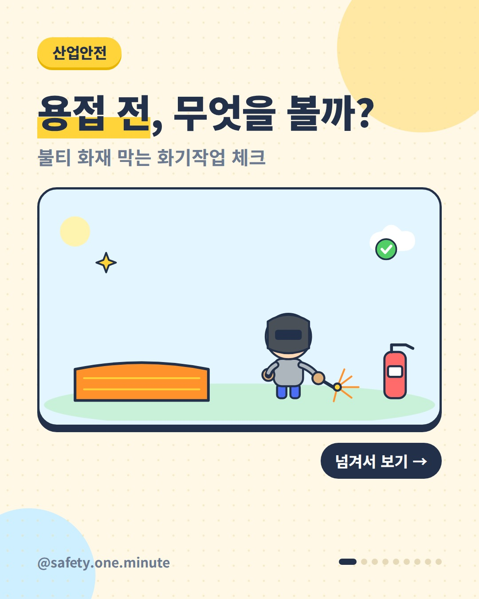
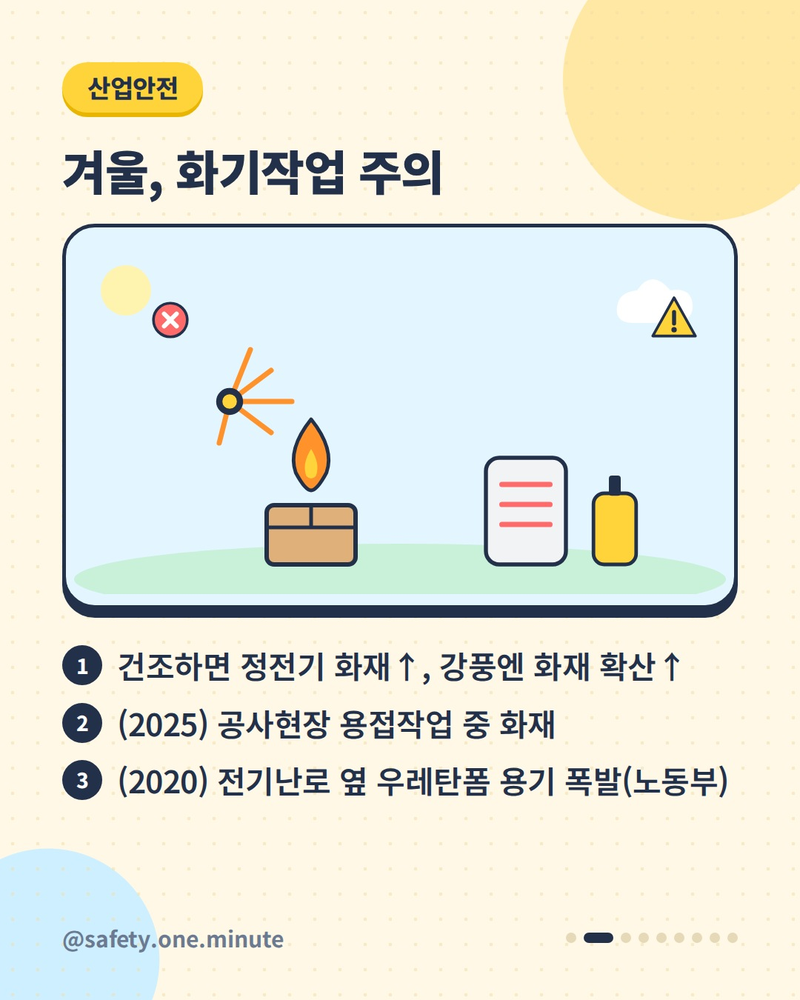
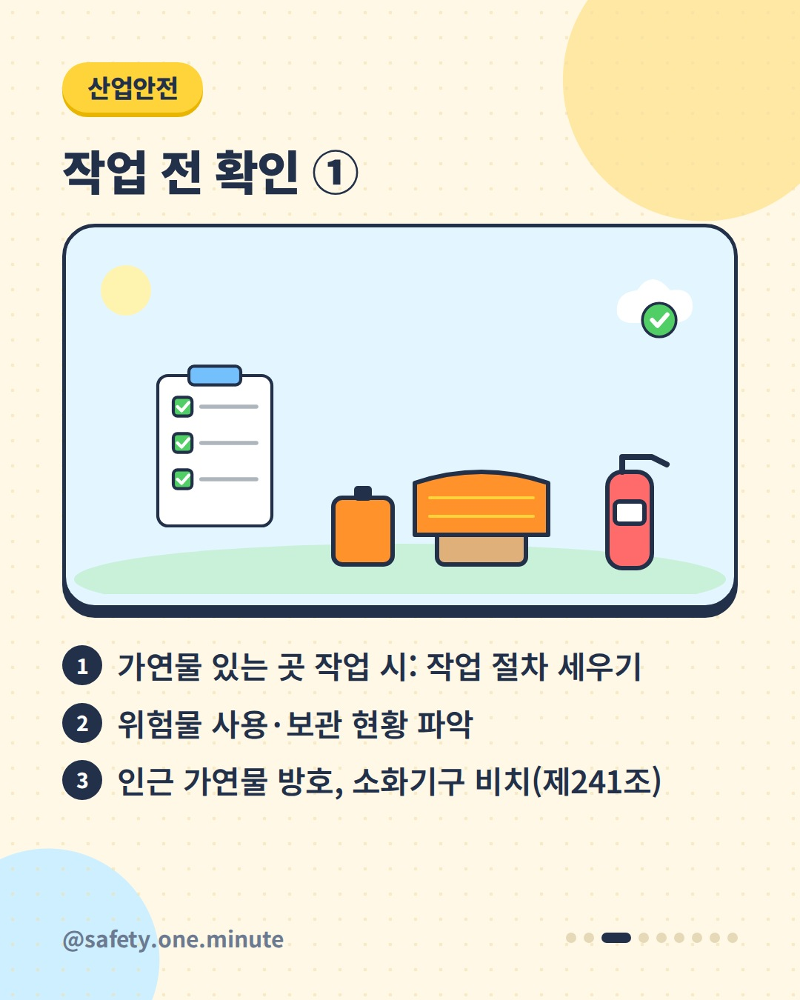
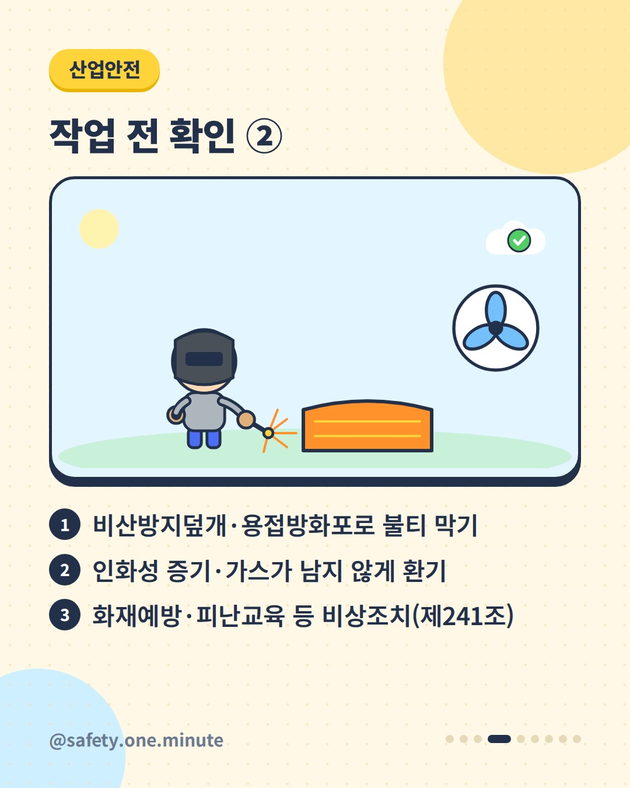
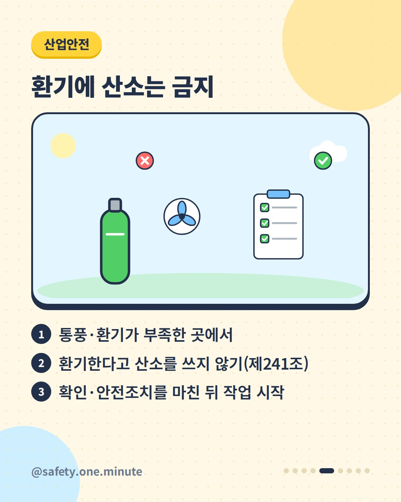
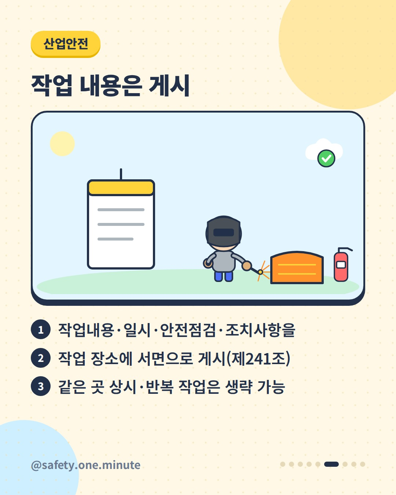
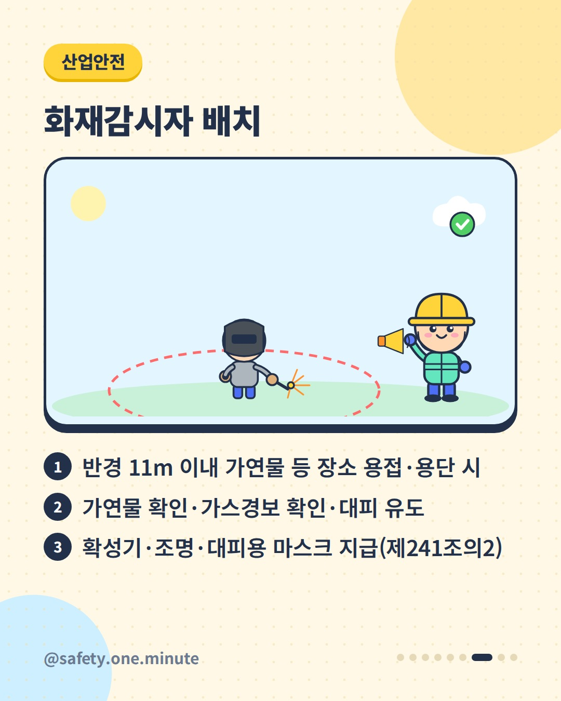
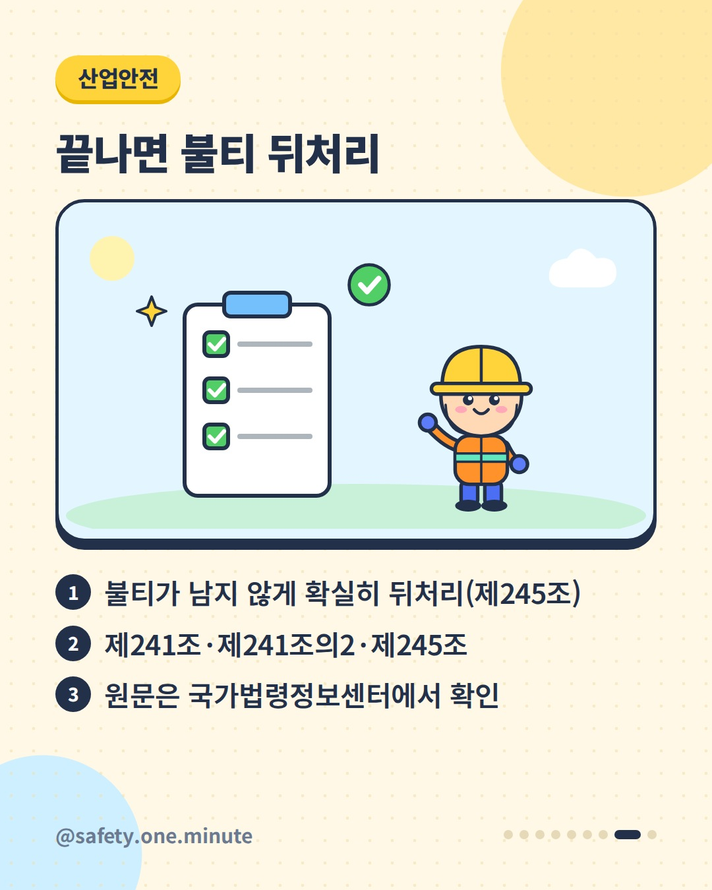
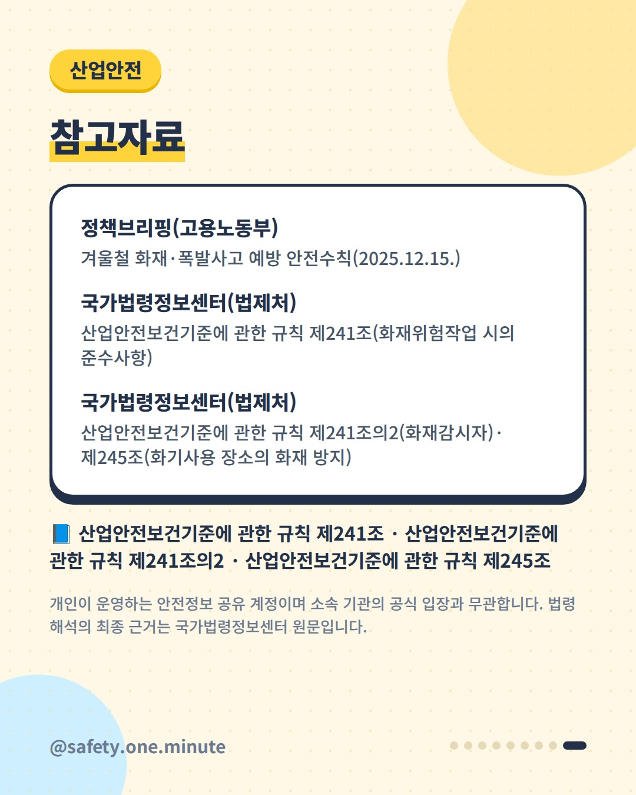

용접 전, 무엇을 볼까? — 9장 (4:5)









캡션
용접 불티는 작업 반경 밖까지 튈 수 있습니다. 불꽃을 켜기 전에 무엇을 확인해야 할까요? 고용노동부는 겨울철 건조한 날씨엔 정전기 화재가, 강풍엔 화재 확산 위험이 커진다고 안내하며, 공사현장 용접작업 중 화재(2025), 전기난로 주변 우레탄폼 용기 폭발(2020) 사례를 소개했습니다(2025.12.). 산업안전보건기준에 관한 규칙은 가연성물질이 있는 곳의 화재위험작업에 대해 이렇게 정하고 있습니다. 1) 작업 절차 수립, 위험물 현황 파악, 인근 가연물 방호·소화기구 비치(제241조) 2) 비산방지덮개·용접방화포로 불티 막기, 인화성 증기·가스 환기, 화재예방·피난교육(제241조) 3) 통풍이 부족해도 환기용 산소 사용 금지, 작업 전 확인·조치 후 작업 시작(제241조) 4) 작업내용·일시·안전점검 및 조치 사항을 작업 장소에 서면 게시(상시·반복 작업은 생략 가능)(제241조) 5) 반경 11m 이내 가연물 등이 있는 곳에서 용접·용단 땐 화재감시자 배치, 확성기·조명·대피용 마스크 지급(제241조의2) 6) 끝나면 불티가 남지 않게 뒤처리(제245조) ※ 화재감시자 배치 예외 등 세부 요건은 법령 원문(2025.9.1. 시행본 기준)을 확인하세요. 출처: - 고용노동부 – 겨울철 화재·폭발사고 예방 안전수칙(2025) - 국가법령정보센터(법제처) – 산업안전보건기준에 관한 규칙 제241조·제241조의2·제245조 개인이 운영하는 안전정보 공유 계정이며 소속 기관의 공식 입장과 무관합니다. 법령 해석의 최종 근거는 국가법령정보센터 원문입니다. #용접안전 #화기작업 #화재감시자 #불티 #산업안전 #건설안전